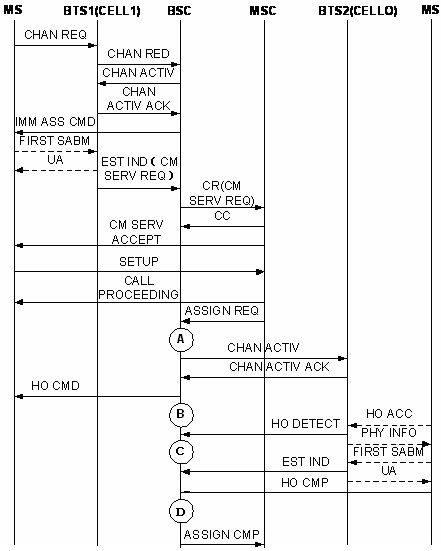

Measurement Counter
H3110W:CELL_INTRABSC_OUTCELL_HO_CMD_SD_NOT_INCLUDE_DR_900_900
H3110X:CELL_INTRABSC_OUTCELL_HO_CMD_SD_NOT_INCLUDE_DR_1800_1800
H3110Y:CELL_INTRABSC_OUTCELL_HO_CMD_SD_NOT_INCLUDE_DR_900_1800
H3110Z:CELL_INTRABSC_OUTCELL_HO_CMD_SD_NOT_INCLUDE_DR_1800_900
H3117W:CELL_INTRABSC_OUTCELL_HO_CMD_TCHF_NOT_INCLUDE_DR_900_900
H3117X:CELL_INTRABSC_OUTCELL_HO_CMD_TCHF_NOT_INCLUDE_DR_1800_1800
H3117Y:CELL_INTRABSC_OUTCELL_HO_CMD_TCHF_NOT_INCLUDE_DR_900_1800
H3117Z:CELL_INTRABSC_OUTCELL_HO_CMD_TCHF_NOT_INCLUDE_DR_1800_900
H3118W:CELL_INTRABSC_OUTCELL_HO_CMD_TCHH_NOT_INCLUDE_DR_900_900
H3118X:CELL_INTRABSC_OUTCELL_HO_CMD_TCHH_NOT_INCLUDE_DR_1800_1800
H3118Y:CELL_INTRABSC_OUTCELL_HO_CMD_TCHH_NOT_INCLUDE_DR_900_1800
H3118Z:CELL_INTRABSC_OUTCELL_HO_CMD_TCHH_NOT_INCLUDE_DR_1800_900
H3111W:CELL_INTRABSC_OUTCELL_HO_CMD_DR_900_900
H3111X:CELL_INTRABSC_OUTCELL_HO_CMD_DR_1800_1800
H3111Y:CELL_INTRABSC_OUTCELL_HO_CMD_DR_900_1800
H3111Z:CELL_INTRABSC_OUTCELL_HO_CMD_DR_1800_900
H311A:CELL_INTRABSC_OUTCELL_HO_CMD_UL_QLTY
H311B:CELL_INTRABSC_OUTCELL_HO_CMD_DL_QLTY
H311C:CELL_INTRABSC_OUTCELL_HO_CMD_UL_RXL
H311D:CELL_INTRABSC_OUTCELL_HO_CMD_DL_RXL
H311E:CELL_INTRABSC_OUTCELL_HO_CMD_TA
H311F:CELL_INTRABSC_OUTCELL_HO_CMD_BETTER_CELL
H311G:CELL_INTRABSC_OUTCELL_HO_CMD_LOAD
H311H:CELL_INTRABSC_OUTCELL_HO_CMD_RAPID_LEV_DROP
H311M:CELL_INTRABSC_OUTCELL_HO_CMD_DUBAND_OUTTER_INNER
H311N:CELL_INTRABSC_OUTCELL_HO_CMD_DUBAND_INNER_OUTTER
H311O:CELL_INTRABSC_OUTCELL_HO_CMD_DUBAND_INNER_USER_MOVE
H311I:CELL_INTRABSC_OUTCELL_HO_CMD_MSC_INTERVENTION
H311J:CELL_INTRABSC_OUTCELL_HO_CMD_OM_INTERVENTION
H311L:CELL_INTRABSC_OUTCELL_HO_CMD_OTHER
H311Aa:CELL_INTRABSC_OUTCELL_HO_CMD_BSC_LOOP
H311Ab:CELL_INTRABSC_OUTCELL_HO_CMD_BTS_LOOP
Description
In the outgoing internal inter-cell handover procedure, after the channel in the target cell is assigned and activated, the BSC sends the HO CMD to the MS through the originating cell to notify the MS to access the new channel. The specific counter provides the number of outgoing internal inter-cell handover commands initiated by the BSC in the originating cell. Together with the Outgoing Internal Inter-Cell Handover Requests and the Failed Outgoing Internal Inter-Cell Handovers, this counter determines the outgoing internal inter-cell handover performance. Together with the counters related to the incoming internal inter-cell handovers, this counter determines the internal inter-cell handover performance.
- H3110W:CELL_INTRABSC_OUTCELL_HO_CMD_SD_NOT_INCLUDE_DR_900_900
- H3110X:CELL_INTRABSC_OUTCELL_HO_CMD_SD_NOT_INCLUDE_DR_1800_1800
- H3110Y:CELL_INTRABSC_OUTCELL_HO_CMD_SD_NOT_INCLUDE_DR_900_1800
- H3110Z:CELL_INTRABSC_OUTCELL_HO_CMD_SD_NOT_INCLUDE_DR_1800_900
- H3117W:CELL_INTRABSC_OUTCELL_HO_CMD_TCHF_NOT_INCLUDE_DR_900_900
- H3117X:CELL_INTRABSC_OUTCELL_HO_CMD_TCHF_NOT_INCLUDE_DR_1800_1800
- H3117Y:CELL_INTRABSC_OUTCELL_HO_CMD_TCHF_NOT_INCLUDE_DR_900_1800
- H3117Z:CELL_INTRABSC_OUTCELL_HO_CMD_TCHF_NOT_INCLUDE_DR_1800_900
- H3118W:CELL_INTRABSC_OUTCELL_HO_CMD_TCHH_NOT_INCLUDE_DR_900_900
- H3118X:CELL_INTRABSC_OUTCELL_HO_CMD_TCHH_NOT_INCLUDE_DR_1800_1800
- H3118Y:CELL_INTRABSC_OUTCELL_HO_CMD_TCHH_NOT_INCLUDE_DR_900_1800
- H3118Z:CELL_INTRABSC_OUTCELL_HO_CMD_TCHH_NOT_INCLUDE_DR_1800_900
Frequency Band of the Originating Cell |
Frequency Band of the Target Cell |
Counter |
|---|---|---|
GSM900, GSM900&DCS1800, GSM850, GSM850&DCS1800, GSM850&PCS1900 |
GSM900, GSM900&DCS1800, GSM850, GSM850&DCS1800, GSM850&PCS1900 |
900_900 |
GSM900, GSM900&DCS1800, GSM850, GSM850&DCS1800, GSM850&PCS1900 |
DCS1800, PCS1900 |
900_1800 |
DCS1800, PCS1900 |
GSM900, GSM900&DCS1800, GSM850, GSM850&DCS1800, GSM850&PCS1900 |
1800_900 |
DCS1800, PCS1900 |
DCS1800, PCS1900 |
1800_1800 |
- H3111W:CELL_INTRABSC_OUTCELL_HO_CMD_DR_900_900
- H3111X:CELL_INTRABSC_OUTCELL_HO_CMD_DR_1800_1800
- H3111Y:CELL_INTRABSC_OUTCELL_HO_CMD_DR_900_1800
- H3111Z:CELL_INTRABSC_OUTCELL_HO_CMD_DR_1800_900
- The following counters provide the numbers of outgoing internal inter-cell handover commands initiated by the BSC using BQ handover algorithm based on the UL or DL receive quality in the MR. They are measured when the BSC sends the HO CMD message to the MS.
- H311A:CELL_INTRABSC_OUTCELL_HO_CMD_UL_QLTY
- H311B:CELL_INTRABSC_OUTCELL_HO_CMD_DL_QLTY
 NOTE:
NOTE: The receive quality is evaluated with bit error ratio (BER), and the radio link quality is evaluated with the quality level in the MR. A high BER may be attributed to an excessively low signal level or channel interference.
BQ handover algorithm is for emergency handover based on the uplink or downlink receive quality over the Um interface. If uplink quality rank is greater than or equal to the UL Qual. Threshold, the BQ handover is initiated because of bad uplink quality. If downlink quality rank is greater than or equal to the DL Qual. Threshold, the BQ handover is initiated because of bad downlink quality.
- The following counters provide the numbers of outgoing internal inter-cell handover commands initiated by the BSC using edge handover algorithm based on the UL or DL receive level in the measurement report. They are measured when the BSC sends the HO CMD message to the MS.
- H311C:CELL_INTRABSC_OUTCELL_HO_CMD_UL_RXL
- H311D:CELL_INTRABSC_OUTCELL_HO_CMD_DL_RXL
NOTE: Edge handover algorithm is used to determine whether to initiate a handover based on the uplink or downlink receive level over the Um interface. If the uplink receive level is smaller than the Edge HO UL RX_LEV Threshold, the edge handover is initiated because of the low uplink level. If the downlink receive level is smaller than the Edge HO DL RX_LEV Threshold, the edge handover is initiated because of the low downlink level.
- The following counters provide the numbers of outgoing internal inter-cell handover commands initiated by the BSC using TA handover algorithm based on the TA value in the measurement report. They are measured when the BSC sends the HO CMD message to the MS.
- H311E:CELL_INTRABSC_OUTCELL_HO_CMD_TA
NOTE: TA for a common cell: 0-63; TA for a underlaid subcell in a dual-timeslot extended cell: 0-229. If there are 63 bits and each bit step is 553.5 m, the distance is 35 km.
TA handover algorithm is for emergency handover based on the TA value reported by the BTS. If the TA value is greater than the TA Threshold, a TA handover is initiated.
- The following counter provides the number of outgoing internal inter-cell handover commands initiated by the BSC based on the measurement reports using algorithms such as power budget handover (PBGT), inter-layer handover (better cell), and better 3G cell handover. It is measured when the BSC sends the HO CMD message to the MS.
- H311F:CELL_INTRABSC_OUTCELL_HO_CMD_BETTER_CELL
NOTE: PBGT handover algorithm is used to decide whether to initiate a handover to a valid cell with a lower path loss.
Inter-layer (better cell) handover algorithm is used to decide whether to initiate a handover to a cell which is on a lower layer than the serving cell and whose downlink level is greater than the Inter-layer HO Threshold.
Better 3G cell handover algorithm is used to determine whether to initiate a handover based on the measurement object. If the measurement object is RSCP and the measured result is greater than the RSCP Threshold for Better 3G Cell HO, or if the measurement object is Ec/No and the measured result is greater than the Ec/NO Threshold for Better 3G Cell HO, then a handover to a 3G better cell is initiated.
- The following counters provide the numbers of outgoing internal inter-cell handover commands initiated by the BSC using load handover algorithm based on the current load conditions in the serving cell. It is measured when the BSC sends the HO CMD message to the MS.
- H311G:CELL_INTRABSC_OUTCELL_HO_CMD_LOAD
NOTE: Load handover algorithm is used to decide whether to initiate a handover based on the load conditions on the serving cell and the neighboring cell. If the system signaling flow is smaller than the System Flux Threshold for Load HO, the load on the serving cell is greater than the Load HO Threshold and the load on the target cell is smaller than the Load Req.on Candidate Cell, a load handover is initiated.
- The following counters provide the numbers of outgoing internal inter-cell handover commands initiated by the BSC using rapid lever drop algorithm based on the measurement reports. It is measured when the BSC sends the HO CMD message to the MS.
- H311H:CELL_INTRABSC_OUTCELL_HO_CMD_RAPID_LEV_DROP
NOTE: Rapid lever drop algorithm is used to decide whether to initiate a handover based on the downlink receive level in the measurement report. When the drop slope of the downlink receive level meets the specified threshold, a rapid lever drop handover is initiated.
- If the enhanced dual-band network is enabled, the following counters provide the numbers of outgoing internal inter-cell commands sent by the BSC to the MS based on the algorithms for enhanced dual-band network handover and the measurement report. They are measured when the BSC sends the HO CMD message to the MS.
- The following counter provides the number of outgoing internal inter-cell handover commands initiated because of high load in the underlaid subcell. It is measured when the BSC sends the HO CMD message to the MS.
- H311M:CELL_INTRABSC_OUTCELL_HO_CMD_DUBAND_OUTTER_INNER
- The following counter provides the number of outgoing internal inter-cell handover commands initiated because of low load in the underlaid subcell. It is measured when the BSC sends the HO CMD message to the MS.
- H311N:CELL_INTRABSC_OUTCELL_HO_CMD_DUBAND_INNER_OUTTER
- The following counter provides the number of outgoing internal inter-cell handover commands initiated because of call movement in the overlaid subcell. It is measured when the BSC sends the HO CMD message to the MS.
- H311O:CELL_INTRABSC_OUTCELL_HO_CMD_DUBAND_INNER_USER_MOVE
NOTE: The handovers in the enhanced dual-band network include:- (1) Handover due to high load in the underlaid subcell
Based on the loads in the overlaid and underlaid subcells, the downlink receive level and system flux in the MRs, a handover from the underlaid subcell to the overlaid subcell is initiated when the following conditions are met.
- The load in the underlaid subcell is higher than the UL Subcell General Overload Threshold.
- The load in the overlaid subcell is lower than the Inner Cell Serious OverLoad Thred.
- The system flux is no higher than Allowed Flow Control Level of UL And OL Subcell HO.
- The current call is within the handover band that allows handover.
- (2) Handover due to low load in the underlaid subcell
Based on the load in the underlaid subcell, the downlink receive level and system flux in the measurement reports, a handover from the overlaid subcell to the underlaid subcell is initiated when the following conditions are met.
- The load in the underlaid subcell is lower than the UL Subcell Lower Load Threshold.
- The system flux is no higher than Allowed Flow Control Level of UL And OL Subcell HO.
- The current call is within the handover band that allows handover.
- (3) Handover due to call movement in the overlaid subcell
Based on the load in the underlaid subcell, the downlink receive level and system flux in the measurement reports, a handover from the underlaid subcell to the overlaid subcell is initiated when the following conditions are met.
- The downlink receive level in the underlaid subcell is lower than the Outgoing OL Subcell HO level Threshold.
- The difference of the downlink receive level between the overlaid subcell and the neighbor cell is lower than the Distance Hysterisis Between Boudaries of UL And OL Subcells (dB).
- The following counter provides the number of outgoing internal inter-cell handover commands initiated because of high load in the underlaid subcell. It is measured when the BSC sends the HO CMD message to the MS.
- The following counter provides the number of outgoing internal inter-cell handover commands initiated by the BSC based on the HANDOVER CANDIDATE ENQUIRE message received from the MS. It is measured when the BSC sends the HO CMD message to the MS.
- H311I:CELL_INTRABSC_OUTCELL_HO_CMD_MSC_INTERVENTION
NOTE: After receiving the HANDOVER CANDIDATE ENQUIRE message from the MSC, the BSC instructs proper MSs in the source cell to perform forced handover, based on the originating cell ID and the number of MSs to perform handovers contained in that message. The MSs that are forced to perform handover are as many as the specified number of MSs contained in the message.
- The following counter provides the number of outgoing internal inter-cell handover commands initiated manually by the the maintenance personnel from the maintenance terminal. It is measured when the BSC sends the HO CMD message to the MS.
- H311J:CELL_INTRABSC_OUTCELL_HO_CMD_OM_INTERVENTION
- When the BSC local switch is enabled, the calls that meet the BSC local switch conditions communicate using the BSC local switch, and those meet the BTS local switch conditions communicate using the BTS local switch. The following counters provide the numbers of outgoing internal inter-cell handover commands respectively from the calls using the BSC local switch and those using the BTS local switch. They are measured when the BSC sends the HO CMD message to the MS.
- H311Aa:CELL_INTRABSC_OUTCELL_HO_CMD_BSC_LOOP
- H311Ab:CELL_INTRABSC_OUTCELL_HO_CMD_BTS_LOOP
- The following counter provides the number of outgoing internal inter-cell handover commands due to other causes except the previous ones. It is measured when the BSC sends the HO CMD message to the MS.
- H311L:CELL_INTRABSC_OUTCELL_HO_CMD_OTHER
Unit
Integer number or integer.
Measurement Point
As shown in Figure 1, during the outgoing internal inter-cell handover procedure initiated by the BSC based on the measurement reports, the specific counter is measured in the originating cell at B when the BSC sends the HO CMD message to the MS.

A |
Measurement point of Outgoing Internal Inter-Cell Handover Requests (Excluding Directed Retry) |
B |
Measurement point of Outgoing Internal Inter-cell Handover Commands (Excluding Directed Retry) |
C |
Measurement point of Outgoing Internal Inter-Cell Handover Detection Messages Received by BSC (Excluding Directed Retry) |
D |
Measurement point of Successful Outgoing Internal Inter-Cell Handovers (Excluding Directed Retry) |
As shown in Figure 2, during the outgoing internal inter-cell handover procedure (directed retry) initiated by the BSC based on the measurement reports, the specific counter is measured in the originating cell at B when the BSC sends the HO CMD message to the MS.

A |
Measurement point of Outgoing Internal Inter-Cell Handover Requests (Directed Retry) |
B |
Measurement point of Outgoing Internal Inter-Cell Handover Commands (Directed Retry) |
C |
Measurement point of Outgoing Internal Inter-Cell Handover Detection Messages Received by BSC (Directed Retry) |
D |
Measurement point of Successful Outgoing Internal Inter-Cell Handovers (Directed Retry) |
Formula
This is an original counter without involving any formula.